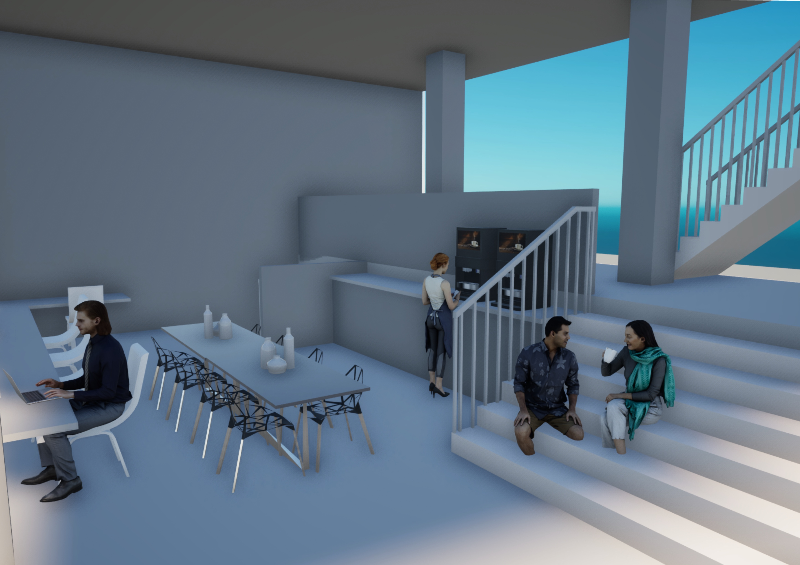
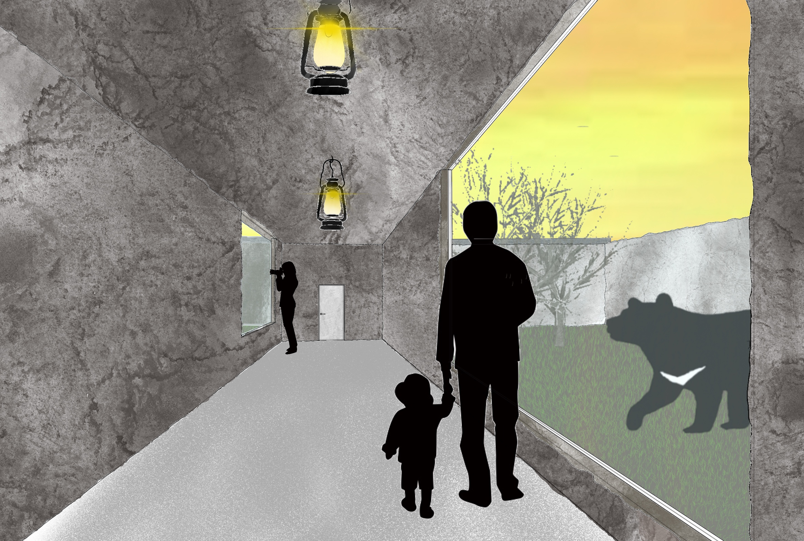
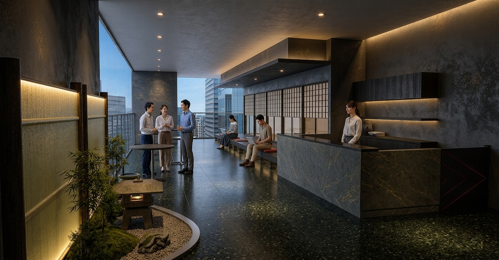

Architecture
× DX Promotion
建築デザインと情報工学を横断し、AIとアプリケーション開発で「建築のデジタル化・最適化」を研究・実践しています。
プロフィール

皆藤 優太
Yuta Kaito
和歌山大学大学院 システム工学研究科
デザイン科学専攻
「空間設計」と「DX推進」
建築デザインの経験を持ちながら、建築情報学・情報工学を学び、AIやアプリケーション開発を組み合わせた「建築のデジタル化・最適化」を研究・実践しています。空間をつくるだけでなく、テクノロジーを用いて「つくるプロセスそのものを豊かに効率化する」ことを目指しています。
キャリア
大阪府立生野高等学校 文理科
文理科にて高度な基礎学力と論理的・科学的思考力を養い、実空間の創造への深い関心を持つきっかけを得る。
和歌山大学 システム工学部
独自のダブルメジャー制度により建築と環境のデザインを主として学び、建築設計を学ぶ傍ら、デジタル技術の建築への応用に興味を持つ。
和歌山大学大学院 システム工学研究科 デザイン科学専攻
空間デザイン研究室に所属し、建築とDXをテーマとしアイデア発想における生成AIの活用について研究中。
主要プロジェクト ＆ 実績
Architectural and Technology Projects

個人設計事務所でのアルバイトにおける設計プロセスの変革。Shapr3Dによるモデルの構築、Morpholio Traceによるパース作成の導入提案により、より多くのアイデアを検討し、自身の案が反映されたBBQ場が実際に竣工。

設計の「一番はじめのアイデア出し」においてAIが設計者の思考をどう助けるかを実証的に探究する研究。

手書きシフト管理による転記ミスや利便性の課題を解決。Google Apps Scriptを活用したWebアプリケーションを構築し、発注票・マニュアルのデジタル化など店舗運営をトータルに改善。

日常の写真やメモから感情推論データを生成し、AIが個人の「記憶のネットワーク」を構築。発想時にあえて関連性の低い記憶同士を組み合わせる提案を行わせ、アイデアに新たな刺激を与えるアプリを提案。
プロジェクト詳細
主な学び・インサイト (Key Insights)
プロジェクト期間
使用ツール ＆ スキル
BIM / 3D CAD

Rendering / Visualization

Design / Illustration

AI / Technology

趣味・ライフスタイル
INDEX — SNAPSHOT GALLERY
Camera / 写真

日常のきらめきや街角のスナップ撮影
旅先や街歩きをしながら、光が美しく差し込む瞬間や、人々のふとした表情をカメラで切り取るのが何よりの楽しみです。愛機を片手に、季節の美しい移ろいや、何気ない日常の中に宿る一瞬のドラマを探求しています。